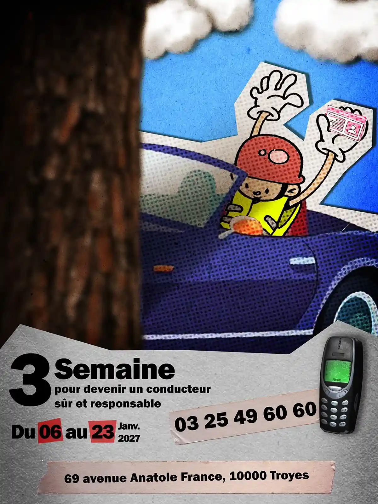
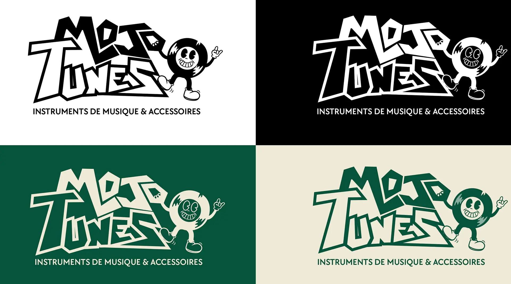
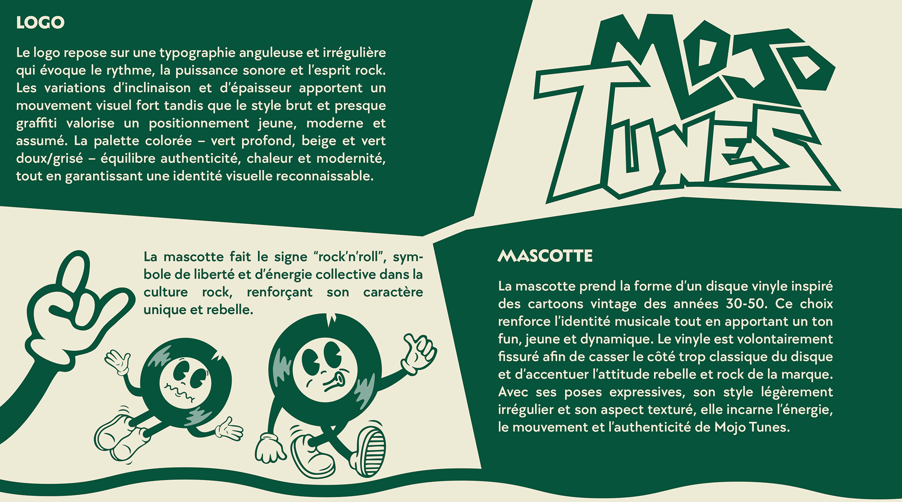
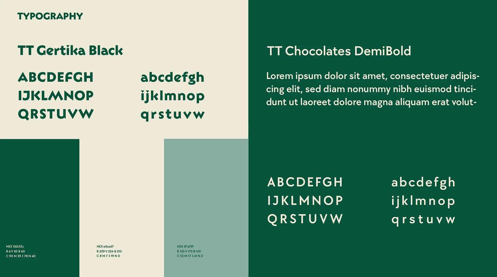
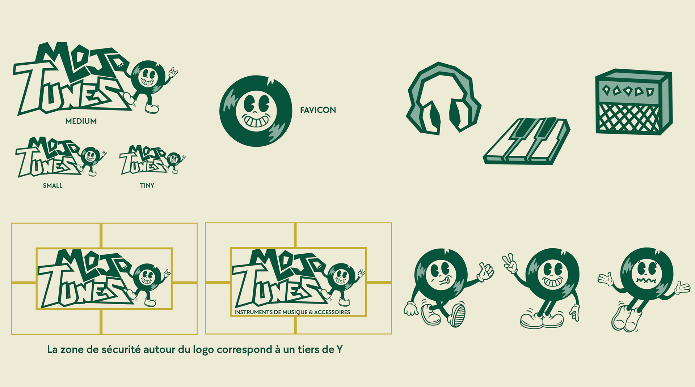
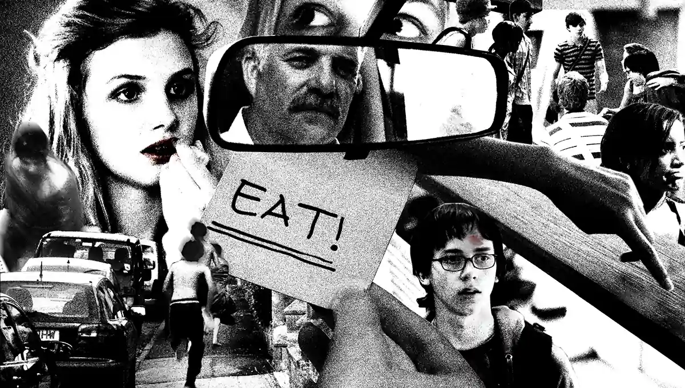
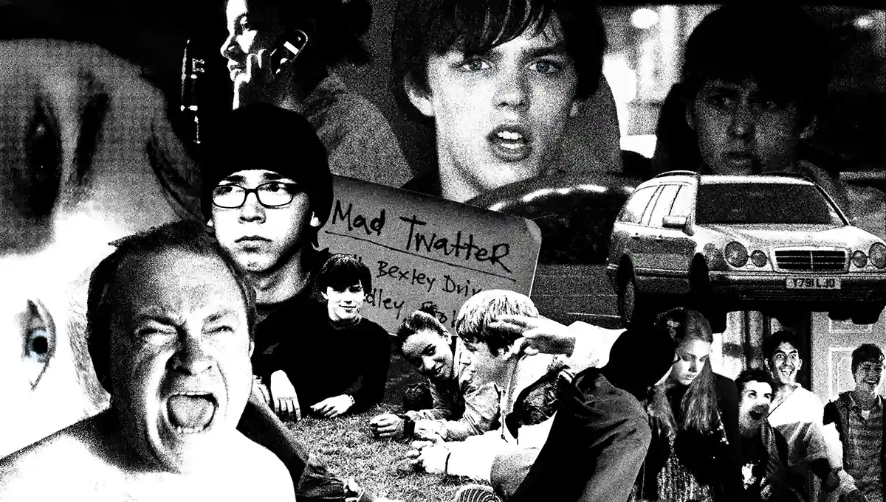
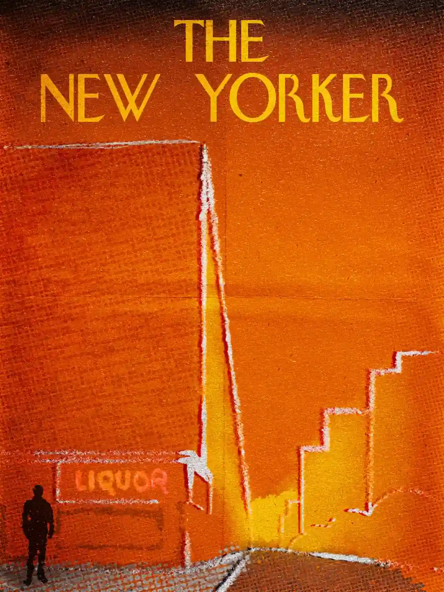
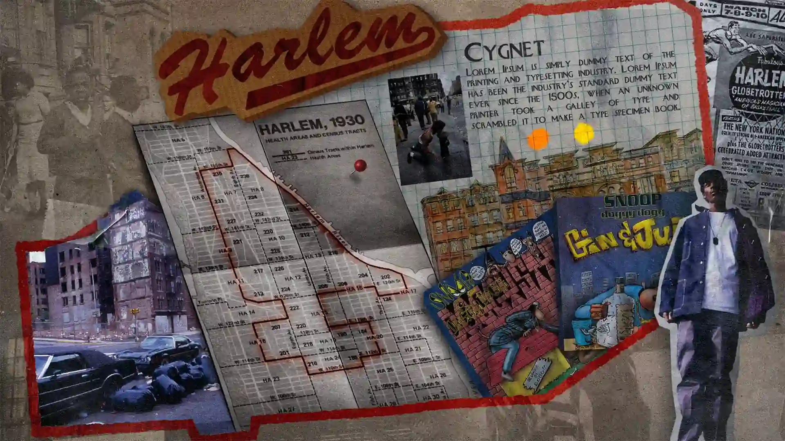

Portfolio
Identite visuelle, Direction artistique, Illustration









Mes creations graphiques s'appuient principalement sur la suite Adobe Creative Cloud. J'utilise Adobe Photoshop pour le retouche photo, la composition et les travaux bases sur le collage, ainsi que Adobe Illustrator pour la conception vectorielle, l'identite visuelle et l'illustration. Ces deux outils me permettent de couvrir un large spectre de disciplines : affiches, chartes graphiques, couvertures editoriales et experimentations visuelles.
Je realise une variete de projets graphiques couvrant plusieurs domaines : identite visuelle (creation de chartes graphiques, logos et systemes visuels pour des marques ou entreprises), affiches et communication print (conception d'affiches publicitaires ou culturelles), illustration et couverture editoriale (illustrations inspirees de publications comme le New Yorker), ainsi que des travaux d'experimentation graphique (compositions en collage, explorations stylistiques et exercices de direction artistique). Chaque projet est aborde avec une attention particuliere a la coherence visuelle et au message a transmettre.